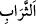
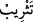

92. (Yûsuf) dedi ki: “Bugün size kınama yok, Allah sizi bağışlasın. O,
merhametlilerin merhametlisidir.”
(Yûsuf) dedi ki: “Bugün size kınama yok,” Bugün size hiç başa kakma yok. Ben aslâ
sizin diğer günahlarınızı da yüzünüze vurmam. Kınanacağınızı sandığınız bugünde size
hiçbir kınama olmadığına göre diğer günler hakkında ne düşünürsünüz? Buradaki
‘gün’den maksad, mutlak zamandır.
“” aslında karnı kaplayan yağ tabakası demektir. “” de bu yağ tabakasının
izâle edilmesi anlamındadır. Çünkü, ayıplama ve kınamada ileri gidilmesi, değerli
kimselere çok ağır geldiği için onların bedenini ve yağını eritir. el-Kevâşî’de böyle
geçmektedir.
Şeyhzâde ise şöyle der: “Takrî‘ (kınama)”, “tesrîb” kelimesi ile ifade edilmiştir.
Çünkü ikisinde de yırtıp parçalama mânâsı vardır. Azarlama ve kınama, insanın
şahsiyetini parçalayıp yüzünün suyunu giderir.”
Yûsuf (a.s.) tekrar söze başladı ve şöyle dedi: “Allah sizi bağışlasın.” Böylece
onlardan sâdır olan yanlış davranışların bağışlanması için duâ etmiştir.
Âyetin “Allah, sizi bugün bağışlar.” şeklinde anlaşılması da mümkündür. Yûsuf (a.s.)
onların suçlarını o gün affedince kul hakkı üzerlerinden düşmüştür. Allah’a tevbe
ettiklerinden dolayı O’nun hakkı da kalmamıştır. Çünkü Allah Teâlâ kullarının tevbesini
kabul buyurur.
et-Te’vîlâtü’n-Necmiyye’de şöyle der: “Yûsuf (a.s.) kardeşlerine daha önce yaptıkları
kötülükleri hatırlattı. Fakat bu kötülükler, onun rütbesinin yükselmesini ve büyük bir
mülke erişmesini sağladığı için sonra da: “Allah sizi bağışlasın” dedi.
Yûsuf (a.s.)’ın ne kadar kerem sâhibi olduğunu gösteren şeylerden birisi de şudur:
Kardeşleri kendisine:
“Bizi sabah-akşam yemeğe dâvet ediyorsun. Fakat biz sana yaptıklarımızdan dolayı
utanıyoruz.” diye haber saldılar. Onlara şöyle cevap verdi:
“Her ne kadar içlerinde bir köle olduysam da Mısırlılar bana değer verirler ve:
“Yirmi dirheme satılan bir köleyi bu mertebeye ulaştıran Allah noksanlardan
münezzehtir.” derler.
Şimdi sizin sâyenizde daha da şeref kazandım ve insanların gözünde büyüdüm. Çünkü
insanlar sizin benim kardeşlerim olduğunuzu ve benim de İbrâhim (a.s.)’ın torunlarından
olduğumu öğrendiler.”
Rivâyete göre Hz. Peygamber (s.a.) Mekke fethedildiği gün, Kâbe kapısının
tokmaklarını tutarak Kureyşliler’e şöyle dedi:
“Size ne yapmamı bekliyorsunuz?”
Kureyşliler de:
“Kerem sâhibi bir kardeş ve kerem sâhibi bir kardeşin oğlu olarak senden hayır
bekliyoruz.